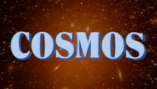
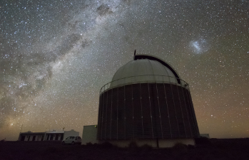
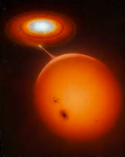

|
Ovidiu Vaduvescu and Richard Ashley are employees at the Isaac Newton Group of telescopes on La Palma and work at the William Herschel and the Isaac Newton telescopes regularly. Both are experienced professional astronomers who share a love for the field and are keen backyard astronomers too.
AstroFarm S.L. was created in 2020 as a business to bring astro-tourism to La Palma and offer observing and hosting for all people interested in looking at the stars, whether they are professionals, students or hobbyists. |
|
Richard Ashley was introduced to Carl Sagan's COSMOS series when he was 9 years old, being given special permission to stay up late to watch it. This started his love for astronomy. He studied Physics and Astronomy at the University of Cape Town in the 1990's and spent many nights observing at the South African Astronomical Observatory on the 20, 30 and 40" telescopes with photomultiplier photometry (rather than CCD). He was supervised by Don Kurtz, Darragh O'Donoghue and Brian Warner.
He converted to Electrical Engineering while still in Cape Town and then moved to London to work as a technical consultant in the .com world. He spent 15 years working at and is still a part-time consultant there. Returning to astronomy in 2015, he undertook first a Masters and then a PhD in Astrophysics at the University of Warwick, supervised by Tom Marsh and Boris Gänsicke. His research is mainly focused on the evolution of compact binary stars with a particular interest in cataclysmic variables and polars. In 2015 he took a student internship at the Isaac Newton Group and became a permanent member of staff in 2018. He is a Telescope Operator at the 4.2m William Herschel Telescope. Recent publications:
|